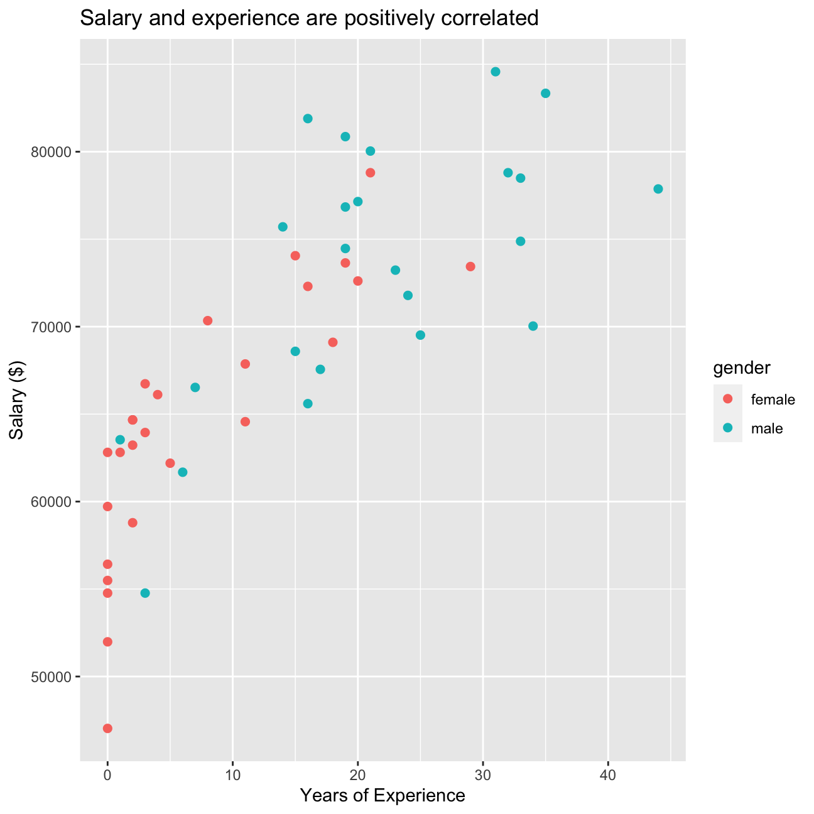
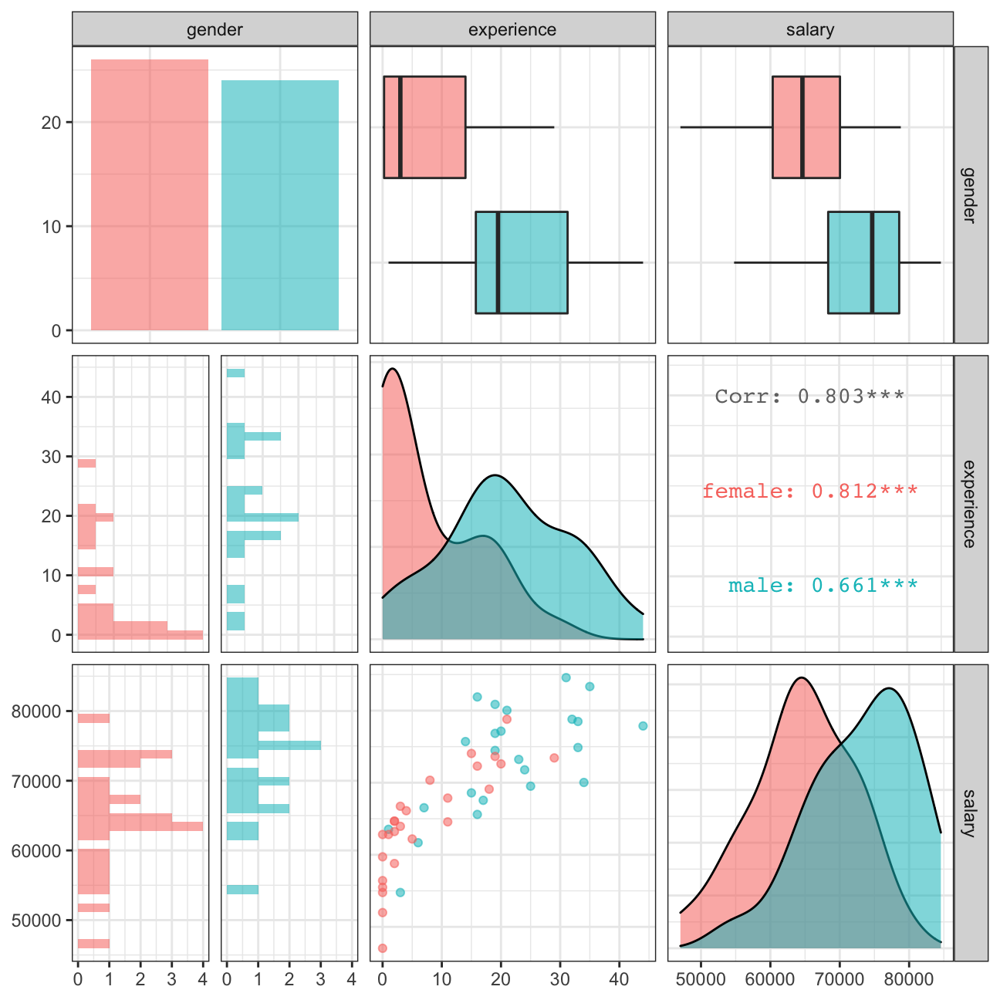

At the last board meeting of Omega Group Plc., the headquarters of a large multinational company, the issue was raised that women were being discriminated in the company, in the sense that the salaries were not the same for male and female executives. A quick analysis of a sample of 50 employees (of which 24 men and 26 women) revealed that the average salary for men was about 8,700 higher than for women. This seemed like a considerable difference, so it was decided that a further analysis of the company salaries was warranted.
The objective of this analysis is to find out whether there is indeed a significant difference between the salaries of men and women, and whether the difference is due to discrimination or whether it is based on another, possibly valid, determining factor.
First, we load the data from the csv file.
omega <- read_csv(here::here("content/projects/salary/data", "omega.csv"))
glimpse(omega) # examine the data frame## Rows: 50
## Columns: 3
## $ salary <dbl> 81894, 69517, 68589, 74881, 65598, 76840, 78800, 70033, 63…
## $ gender <chr> "male", "male", "male", "male", "male", "male", "male", "m…
## $ experience <dbl> 16, 25, 15, 33, 16, 19, 32, 34, 1, 44, 7, 14, 33, 19, 24, …As you can see, there are three variables in the data set: salary, gender and experience.
The data frame omega contains the salaries for the sample of 50 executives in the company. We can calculate summary statistics on salary by gender.
# Summary Statistics of salary by gender
mosaic::favstats (salary ~ gender, data=omega)## gender min Q1 median Q3 max mean sd n missing
## 1 female 47033 60338 64618 70033 78800 64543 7567 26 0
## 2 male 54768 68331 74675 78568 84576 73239 7463 24 0# Dataframe with two rows (male-female) and having as columns gender, mean, SD, sample size,
my_omega <- omega %>%
group_by(gender) %>%
summarise(mean_salary = mean(salary),
sd_salary = sd(salary),
count = n(),
# the t-critical value, the standard error, the margin of error,
t_critical = qt(0.975, count - 1),
se_salary = sd_salary / sqrt(count),
margin_error = t_critical * se_salary,
# and the low/high endpoints of a 95% condifence interval
CI_lower = mean_salary - margin_error,
CI_upper = mean_salary + margin_error)
my_omega## # A tibble: 2 x 9
## gender mean_salary sd_salary count t_critical se_salary margin_error CI_lower
## <chr> <dbl> <dbl> <int> <dbl> <dbl> <dbl> <dbl>
## 1 female 64543. 7567. 26 2.06 1484. 3056. 61486.
## 2 male 73239. 7463. 24 2.07 1523. 3151. 70088.
## # … with 1 more variable: CI_upper <dbl>As we can see from the data the mean salary for men and women is 73.239 and 64.542 USD per year respectively. Also, is important to point out that the confidence intervals for male and female do not overlap. This means that there is a statistically difference between the salary of men and women at Omega.
We can also run a hypothesis testing, assuming as a null hypothesis that the mean difference in salaries is zero, or that, on average, men and women make the same amount of money.
# hypothesis testing using t.test()
t.test(salary~gender, omega)##
## Welch Two Sample t-test
##
## data: salary by gender
## t = -4, df = 48, p-value = 2e-04
## alternative hypothesis: true difference in means is not equal to 0
## 95 percent confidence interval:
## -12973 -4420
## sample estimates:
## mean in group female mean in group male
## 64543 73239# hypothesis testing using infer package
set.seed(1234)
diff_omega <- omega %>%
specify(salary~gender) %>%
calculate("diff in means", order = c("male", "female"))
null_omega <- omega %>%
specify(salary~gender) %>%
hypothesise(null = "independence") %>%
generate(reps = 10000, type = "permute") %>%
calculate("diff in means", order = c("male", "female")) %>%
get_p_value(diff_omega, direction = "two-sided")
null_omega## # A tibble: 1 x 1
## p_value
## <dbl>
## 1 0.0002Our p-value is extremely small (close to 0). Therefore, we can reject the null hypothesis that the mean difference in salary between male and female is 0.
However, is important to understand if the results present above were attributable to other reasons such as differences in experience. A questionnaire send out to the 50 executives in the sample reveals that the average experience of the men is approximately 21 years, whereas the women only have about 7 years experience on average (see table below).
# Summary Statistics of salary by gender
favstats (experience ~ gender, data=omega)## gender min Q1 median Q3 max mean sd n missing
## 1 female 0 0.25 3.0 14.0 29 7.38 8.51 26 0
## 2 male 1 15.75 19.5 31.2 44 21.12 10.92 24 0Similarly, we can investigate if their is a statistically significant difference between the experience of the male and female executives.
my_exp <- omega %>%
group_by(gender) %>%
summarise(mean_exp = mean(experience),
sd_exp = sd(experience),
count = n(),
# the t-critical value, the standard error, the margin of error,
t_critical = qt(0.975, count - 1),
se_exp = sd_exp / sqrt(count),
margin_error = t_critical * se_exp,
# and the low/high endpoints of a 95% condifence interval
CI_lower = mean_exp - margin_error,
CI_upper = mean_exp + margin_error)
my_exp## # A tibble: 2 x 9
## gender mean_exp sd_exp count t_critical se_exp margin_error CI_lower CI_upper
## <chr> <dbl> <dbl> <int> <dbl> <dbl> <dbl> <dbl> <dbl>
## 1 female 7.38 8.51 26 2.06 1.67 3.44 3.95 10.8
## 2 male 21.1 10.9 24 2.07 2.23 4.61 16.5 25.7As we can see from the data above the confidence intervals for male and female do not overlap. This means that there is a statistically difference between the experience of men and women at Omega.
# hypothesis testing using t.test()
t.test(experience~gender, omega)##
## Welch Two Sample t-test
##
## data: experience by gender
## t = -5, df = 43, p-value = 1e-05
## alternative hypothesis: true difference in means is not equal to 0
## 95 percent confidence interval:
## -19.35 -8.13
## sample estimates:
## mean in group female mean in group male
## 7.38 21.12# hypothesis testing using infer package
set.seed(1234)
diff_exp <- omega %>%
specify(experience~gender) %>%
calculate("diff in means", order = c("male", "female"))
null_exp <- omega %>%
specify(experience~gender) %>%
hypothesise(null = "independence") %>%
generate(reps = 10000, type = "permute") %>%
calculate("diff in means", order = c("male", "female")) %>%
get_p_value(diff_exp, direction = "two-sided")
null_exp## # A tibble: 1 x 1
## p_value
## <dbl>
## 1 0Our p-value is extremely small (close to 0). Therefore, we can reject the null hypothesis that the mean difference in experience between male and female is 0. This endanger our conclusion that there is a difference in salary caused by the gender. One could argue that male are paid more because of their difference in experience. We would need to control for experience to alleviate this omitted variable bias.
Now, We can analyse the relationship between salary and experience using a scatterplot to visually inspect the data.
ggplot(omega, aes(x = experience, y = salary, color = gender)) +
geom_point(size = 2) +
labs(title = "Salary and experience are positively correlated",
x = "Years of Experience",
y = "Salary ($)")
omega %>%
select(gender, experience, salary) %>% #order variables they will appear in ggpairs()
ggpairs(aes(colour=gender, alpha = 0.3))+
theme_bw()
The salary vs experience scatterplot shows a clear positive correlation between salary and experience for both male and female. Therefore from the data available it is impossible to infer if difference in salary is caused by discrimination or difference in experience. Hence, I suggest for further researchs to create a regression model controlling for experience in order to infer the true effect of sex on salary.